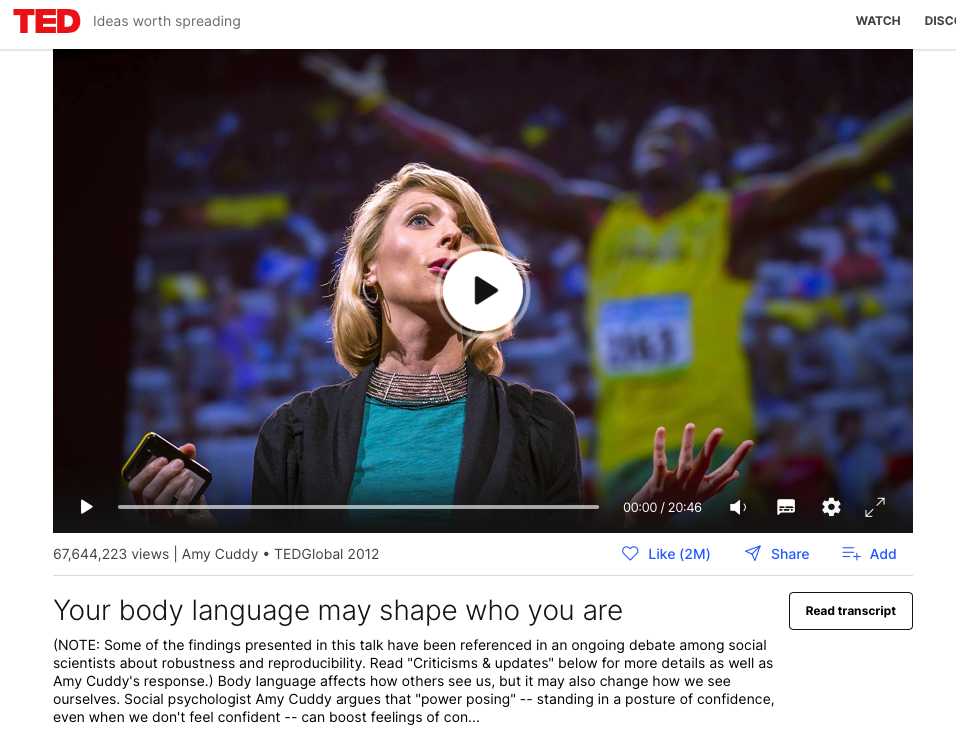

flowchart LR A[Behaviors] -->B(Feelings) A -->C((Physiology))
Hype
2023-10-18 Wed
Rick Gilmore
Overview
In the news…
We analyze the natural process of flipping a coin which is caught in the hand. We show that vigorously flipped coins tend to come up the same way they started…For natural flips, the chance of coming up as started is about .51.
Oza (2023)
- Original paper: (Gould et al., 2023)
- Multiverse/many analysts/meta-analysis discussion coming up
Announcements
- Discuss draft on Friday
Last time
- (Qian, Berenbaum, & Gilmore, 2022) analysis.
- When (Nuijten, Hartgerink, Assen, Epskamp, & Wicherts, 2015) examined 250,000+ statistics in psychology papers published from 1985-2013, what did they find?
- (Szucs & Ioannidis, 2017) found that “Median power to detect small, medium, and large effects was 0.12, 0.44, and 0.73…” Can you restate this in less formal or technical terms?
Today
Hype
- Discuss
- (Ritchie, 2020), Chapter 6
- (Carney, Cuddy, & Yap, 2010), file on Canvas
- (Optional) (Ranehill et al., 2015), file on Canvas
Note
The New York Times published an article by Dominus (2017) on the controversy surrounding Dr. Cuddy’s work called “When the Revolution Came for Amy Cuddy.”
I considered reading this and discussing it, but I was more interested in the substantive claims made in the papers and in the talk.
Reading the Times’ story and discussing the controversy would make a great final project topic, however.
Chapter 6 from (Ritchie, 2020)
- Problems with scientific press releases
- Not written by scientists
- give unwarranted advice
- cross-species leaps or generalizations
- equating correlation with causation
- “Churnalism”
- Journalists do not do their own investigations but repeat press releases
- Popular books (by scientists, too) can gloss over complexities, nuances
- Positive rhetoric/spin
- Counter-example from OPERA study of faster-than-light particle
Power-posing
Carney, D. R., Cuddy, A. J. C. & Yap, A. J. (2010). Power posing: Brief nonverbal displays affect neuroendocrine levels and risk tolerance. Psychological Science, 21(10), 1363–1368. https://doi.org/10.1177/0956797610383437
Humans and other animals express power through open, expansive postures, and they express powerlessness through contractive postures. But can these postures actually cause power?
The results of this study confirmed our prediction that posing in high-power nonverbal displays (as opposed to low-power nonverbal displays) would cause neuroendocrine behavioral changes for both male and female participants: High-power posers experienced elevations in testosterone, decreases in cortisol, and increased feelings of power and tolerance for risk; low-power posers exhibited the opposite pattern.
In short, posing in displays of power caused advantaged and adaptive psychological, physiological, and behavioral changes, and findings suggest that embodiment extends beyond mere thinking and feeling, to physiology and subsequent behavioral choices. That a person can, by assuming two simple 1-min poses, embody power and instantly become more powerful has real-actionable implications.
Methods
- \(n=42\) participants (26 female)
- age or other characteristics not reported
- Assigned into two groups (high power vs. low power)
- Experimenter posed bodies
- Two different poses held for 1 min

High power poses. Figure 1 from (Carney et al., 2010)

Low power poses. Figure 2 from (Carney et al., 2010)
- Other tasks/measures
- Gambling task (risk-taking, powerful feelings)
- Self-reported feelings of power
- Saliva samples (pretest and ~ 17 min after pose)
- Tested for cortisol, testosterone
Results

Figure 3 from Carney et al. (2010)
Citation data
Paper cited ~1,590 times:
according to Google Scholar on 2023-10-16.
Reproducibility notes
- Article was behind a paywall.
- PDF was available via authenticated access to PSU Libraries.
- No data are shared; no code used to make the figures or conduct the analyses were shared.
Presentation comments
- Gilmore prefers graphs that show individual participant data points (see below)
Cuddy (2012)
Amy Cuddy’s TED talk: https://www.ted.com/talks/amy_cuddy_your_body_language_may_shape_who_you_are
Citation data
Talk viewed ~69.5 million times according to TED web page on 2023-10-16.
A replication attempt
Ranehill, E., Dreber, A., Johannesson, M., Leiberg, S., Sul, S. & Weber, R. A. (2015). Assessing the robustness of power posing: no effect on hormones and risk tolerance in a large sample of men and women [Review of Assessing the robustness of power posing: no effect on hormones and risk tolerance in a large sample of men and women]. Psychological Science, 26(5), 653–656. journals.sagepub.com. https://doi.org/10.1177/0956797614553946
We conducted a conceptual replication study task with a similar methodology as that employed by Carney et al. but using a substantially larger sample (N=200) and a design in which the experimenter was blind to condition.
Our statistical power to detect an effect of the magnitude reported by Carney et al. was more than 95% (see the Supplemental Material available online). In addition to the three outcome measures that Carney et al. used, we also studied two more behavioral tasks (risk taking in the loss domain and willingness to compete).
Consistent with the findings of Carney et al., our results showed a significant effect of power posing on self-reported feelings of power. However, we found no significant effect of power posing on hormonal levels in any of the three behavioral tasks.
Methods
- Sampled \(n=100\) after power analysis; then sampled another 100.
- 3 min pose durations
- Participants modeled poses following computer instructions.
- No deception.
Results

Results excerpt from (Ranehill et al., 2015)

Figure 1 from (Ranehill et al., 2015)
Citation data
Paper cited ~340 times:
according to Google Scholar on 2023-10-16.
Reproducibility notes
- Article was behind a paywall.
- The PDF was available via authenticated access to PSU Libraries.
- The PDF did not easily permit cutting and pasting of text, so it was hard to excerpt those for this document.
- The HTML version of the article was unavailable, so I had to make screenshots of figures.
- There is an OSF site with data and materials.
- The OSF site includes very helpful details about the experiments.
- The data and code were shared, but I don’t have access to the statistical program used (Stata) to rerun the analysis. The data had a
.dtafile extension. This appears to be a plain text, ‘tidy’ data file format that could be used by another program.
Presentation comments

Example of ‘spaghetti’ plot.
- Virtues
- Shows individual data
- Group trends
Exploring logical/causal diagrams
Causal diagrams are one tool to reveal an authors’ claims and assumptions.
Causal diagram for (2010)
flowchart TD
A[Posing] -->B(Testosterone)
A -->C(Cortisol)
A -->D{Powerful feelings}
A -->E[Risk tolerance]
A folk psychology view might hold that feelings cause behaviors.
flowchart TD
D{Powerful feelings} -->A[Posing]
D -->E[Risk tolerance]
D -->|??|C(Cortisol)
D -->|??|B(Testosterone)
Here, the role of feelings on endocrine measures might not be known or clear.
Neuroscientists would argue that feelings are the outcome of physiological processes like hormone levels and nervous system activity.
flowchart TD
C(Cortisol) -->D{Powerful feelings}
B(Testosterone) -->D
F(Nervous system) -->D
F --> A[Posing]
F --> E[Risk tolerance]
And that physiological processes (hormones & nervous system activity) influence one another.
flowchart TD
C(Cortisol) -->D{Powerful feelings}
B(Testosterone) -->D
F(Nervous system) -->D
F --> A[Posing]
F --> E[Risk tolerance]
C <--> F
B <--> F
flowchart TD
A[Posing] -->B(Testosterone)
A -->C(Cortisol)
A -->D{Powerful feelings}
A -->E[Risk tolerance]
flowchart TD
A[Posing] -.-> B(Testosterone)
A -.-> C(Cortisol)
A ==> D{Powerful feelings}
A -.-> E[Risk tolerance]
If the neuroscientific view is correct, there must be a route for behaviors (like posing) to influence feelings through physiology.
flowchart TD
A[Posing] --> B(Nervous system) --> D{Feelings}
B --> A
Note
Sometimes it can be illuminating to sketch an author’s implicit causal model if that model is not stated explicitly.
Note
Gilmore thinks that this interconnected network of plausible causal pathways is another reason why the behavioral and biological sciences are so challenging.
Next time
- Discuss draft
- Assignment
Resources
References
PSYCH 490.009: 2023-10-18 Wed
Carney, D. R., Cuddy, A. J. C., & Yap, A. J. (2010). Power posing: Brief nonverbal displays affect neuroendocrine levels and risk tolerance. Psychological Science, 21(10), 1363–1368. https://doi.org/10.1177/0956797610383437
Cuddy, A. (2012). Your body language may shape who you are. Retrieved from https://www.ted.com/talks/amy_cuddy_your_body_language_may_shape_who_you_are
Diaconis, P., Holmes, S., & Montgomery, R. (2007). Dynamical bias in the coin toss. SIAM Review, 49(2), 211–235. https://doi.org/10.1137/S0036144504446436
Dominus, S. (2017). When the revolution came for amy cuddy. The New York Times. Retrieved from https://www.nytimes.com/2017/10/18/magazine/when-the-revolution-came-for-amy-cuddy.html
Gould, E., Fraser, H. S., Parker, T. H., Nakagawa, S., Griffith, S. C., Vesk, P. A., … Zitomer, R. A. (2023). Same data, different analysts: Variation in effect sizes due to analytical decisions in ecology and evolutionary biology. Retrieved from https://ecoevorxiv.org/repository/view/6000/
Nuijten, M. B., Hartgerink, C. H. J., Assen, M. A. L. M. van, Epskamp, S., & Wicherts, J. M. (2015). The prevalence of statistical reporting errors in psychology (1985–2013). Behavior Research Methods, 1–22. https://doi.org/10.3758/s13428-015-0664-2
Oza, A. (2023, October). Reproducibility trial: 246 biologists get different results from same data sets. http://dx.doi.org/10.1038/d41586-023-03177-1. https://doi.org/10.1038/d41586-023-03177-1
Qian, Y., Berenbaum, S. A., & Gilmore, R. O. (2022). Vision contributes to sex differences in spatial cognition and activity interests. Scientific Reports, 12(1), 17623. https://doi.org/10.1038/s41598-022-22269-y
Ranehill, E., Dreber, A., Johannesson, M., Leiberg, S., Sul, S., & Weber, R. A. (2015). Assessing the robustness of power posing: No effect on hormones and risk tolerance in a large sample of men and women. Psychological Science, 26(5), 653–656. https://doi.org/10.1177/0956797614553946
Ritchie, S. (2020). Science fictions: Exposing fraud, bias, negligence and hype in science (1st ed.). Penguin Random House. Retrieved from https://www.amazon.com/Science-Fictions/dp/1847925669
Szucs, D., & Ioannidis, J. P. A. (2017). Empirical assessment of published effect sizes and power in the recent cognitive neuroscience and psychology literature. PLoS Biology, 15(3), e2000797. https://doi.org/10.1371/journal.pbio.2000797